三套盔甲的物品栏图标，共12张。采用图像生成工具生成，再做裁切和尺寸适配；这里不是穿戴模型预览。
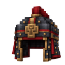
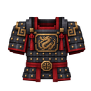
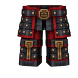
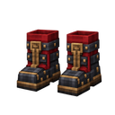
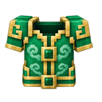
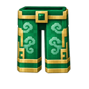
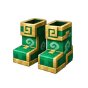
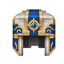
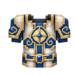
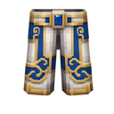
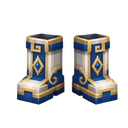
导入玩家书院、城门改动；帝陵增加地面入口；观星台台基增加可进入的书库工坊；音乐遗迹与封印室补全封闭后室，解开机关生成公共奖励箱。
新建筑：平原官道驿站、森林药庐、沙海商旅院。新增建筑探访与后续备料任务。
本页是资源预览，不代表运行中的旧存档已自动更新。
太乙拂尘：正面、斜侧面、近侧面、背面。来自实际 JSON 模型与贴图的隐藏 OpenGL 渲染，不是游戏实拍。
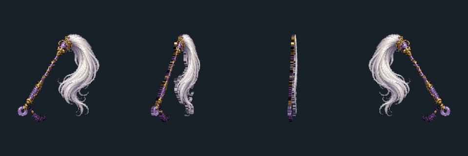